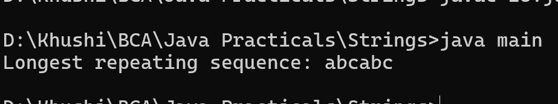

28. Program to find the longest repeating sequence in a string
class main {
public static void main(String[] args) {
String str = "abcabcabcabc";
String longestRepeating = findLongestRepeatingSubstring(str);
System.out.println("Longest repeating sequence: " + longestRepeating);
}
public static String findLongestRepeatingSubstring(String str) {
int n = str.length();
String result = "";
for (int i = 0; i < n; i++) {
for (int j = i + 1; j < n; j++) {
String substring = str.substring(i, j);
if (str.indexOf(substring, j) != -1 && substring.length() > result.length()) {
result = substring;
}
}
}
return result;
}
}
